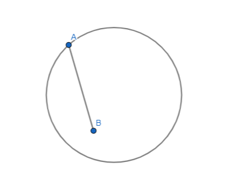
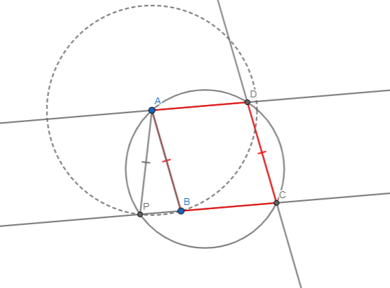
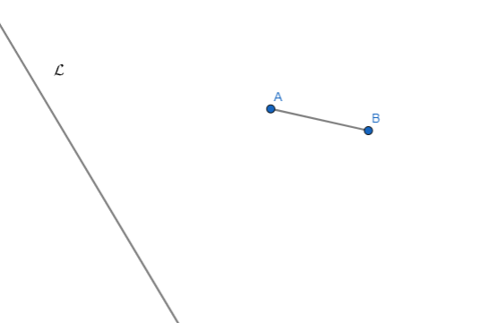

Dados los puntos \(A\), \(P\) y \(Q\) como en la figura, construir un cuadrado \(ABCD\) tal que \(P\) esté en el lado \(\overline{BC}\) y \(Q\) esté en el lado \(\overline{CD}\)
Dibujo
Nuestro objetivo realmente es crear un punto \(C\) tal que \(P\hat{C}Q = 90^\circ \) y \(A\hat{C}Q = 45^\circ \), veamos como:
Pasos de la construcción
1) Armamos una circunferencia \(\mathcal{C}\) cuyo diametro sea \(\overline{PQ}\) y llamamos al centro \(O\)
2) Sea \(\mathcal{M}\) la mediatriz de \(\overline{PQ}\). A la intersección de \(\mathcal{M}\) y \(\mathcal{C}\) del lado de \(A\), la llamamos \(R\)
3) Trazamos la recta \(AR\) y el punto donde corta con \(\mathcal{C}\) lo llamamos \(C\).
4) Finalmente creamos las rectas \(PC\) y \(QC\), el resto es simplemente construir paralelas.
Es claro que \(P\hat{C}Q = 90^\circ \) pues \(\overline{PQ}\) es diametro y \(C\) está sobre la circunferencia. Ahora,
la pregunta mas dificil sería ¿por qué \(R\hat{C}Q = 45^\circ \)? esto se debe a que por teorema de arco capaz, \( R\hat{C}Q = R\hat{P}Q \)
y es claro que \( R\hat{P}Q = 45^\circ \)
Problema
Dada una circunferencia \( \mathcal{C} \), un punto \(A\) en \(\mathcal{C}\) y \(B\) en el interior de \(\mathcal{C}\) como muestra la figura abajo.
Construir un paralelogramo \(ABCD\) tal que \(C\) y \(D\) estén sobre la circunferencia \(\mathcal{C}\)

Dibujo

Pasos de la construcción
1) Construimos una circunferencia \(\mathcal{C}_1(A,B)\), llamamos \(P\)
a la intersección de \(\mathcal{C}_1(A,B)\) con \(\mathcal{C}\).
2) Ahora trazamos la recta \(PB\) y su intersección con \(\mathcal{C}\) la llamamos \(C\)
3) Trazamos la paralela a \(\overline{AB}\) por \(C\) y su intersección con \(\mathcal{C}\) es \(D\)
Justificación
Nuestra estrategia de demostración va a ser mostrar que los ángulos opuestos de \(ABCD\) son iguales, esto asegura que el cuadrilatero construido
es un paralelogramo. Veamos como.
Llamemos \(\alpha\) a \( A\hat{P}C = A\hat{B}P \). Entonces, como \(APCD\) es un cuadrilatero cíclico, tenemos que
\(A\hat{D}C = 180^\circ - \alpha\). A su vez, como \(A\hat{B}P = \alpha\), tenemos que \(A\hat{B}C = 180^\circ-\alpha\).
Ahora, \(DC\) es paralela a \(AB\) por construcción, y \(PC\) es una transversal. Por ángulos correspondientes entre paralelas
tenemos que \(B\hat{C}D = A\hat{P}B = \alpha \). Finalmente, como \(ABCD\) es un cuadrilatero, debe sumar \(360^\circ = 2(180-\alpha) + \alpha + D\hat{A}B\), despejando obtenemos \(D\hat{A}B = \alpha\).
En definitiva, probamos que en el cuadrilatero \(ABCD\) se tiene que los ángulos opuestos son iguales, es decir
\(\hat{A} = \hat{C} = \alpha\) y \(\hat{B} = \hat{D} = 180^\circ-\alpha\). Esto demuestra que \(ABCD\) es un paralelogramo.
Problema
Sean una recta \( \mathcal{L} \), y puntos \(A\) y \(B\) como muestra la figura abajo.
Construir un punto \(C\) en \( \mathcal{L} \) tal que el ángulo \(A\hat{C}B\) sea máximo.

Problema
Sea \(\Delta ABC\) un triángulo isosceles tal que \( \overline{AB} = \overline{AC} \). Sea \(D\) un punto que está sobre la bisectriz de \(A\hat{B}C\) y tal que \(\Delta ACD\) es isosceles \( \overline{AC} = \overline{AD} \). Además se sabe que \(3 A\hat{D}C = B\hat{D} C). Si \(\overline{BC} = 6\), calcular cuanto mide \(\overline{AB} = \overline{AC} = \overline{AD}\) y \(\overline{CD}\).